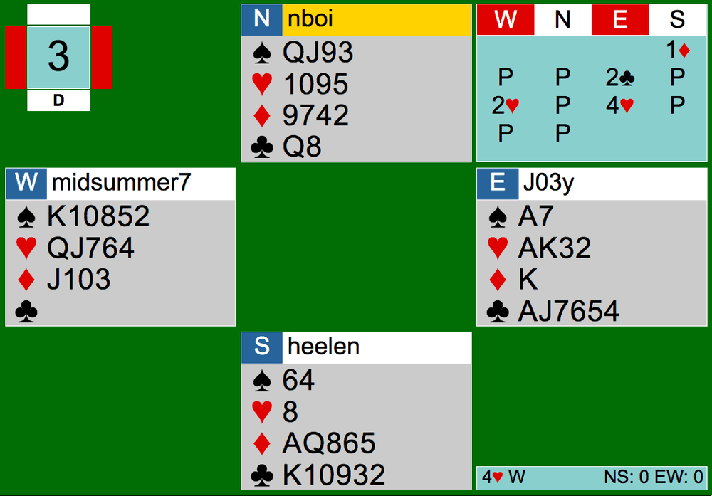
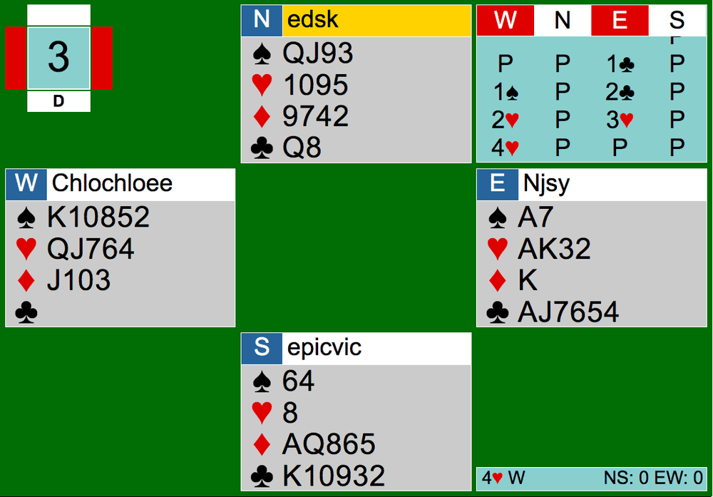

Welcome back to another article! Today, we’ll be analyzing Hand 3 from July 14th’s team game. Here are the links to the hands: https://tinyurl.com/y9pv3ezc https://tinyurl.com/y8xkm4su

At my table, South opens the bidding with 1D holding 5-5 in minors and 9 HCP. It was reasonable though because NS weren’t vulnerable and the diamond suit was solid. Both West and North pass, and East makes a 2C overcall, showing 6 clubs and around 10 points. Although there is no point value limit to the overcall, it doesn’t describe East’s hand very well. In this situation, East should make what is called a takeout double: a double generally made in early bidding that shows a shaped hand and at least invitational values (10+ HCP). It shows length and strength in the unbid suits, which, here, is every suit but diamonds because South (the opponents) opened a diamond. When overcalling with just 2C, it does not force West to bid and they may miss out on a game contract. It also doesn’t give information on East’s diamond suit, which happens to be very short, making East’s hand unsuitable for NT contracts.
After the overcall from East, West responded by bidding 2H. I can see that West is bidding up the line, but when holding 5-5 in majors, you should bid the higher suit first-- spades. They found themselves in a heart fit in the end though, so it all worked out. The final contract at my table was 4H by West.

Over at the other table, South chose not to open the 5-5 minors, which is not as aggressive. The opening began with 1C by East after three passes. West correctly responds with 1S (top of the 5-5 major) and East rebid clubs on the 2 level. Holding 18 HCP and excellent shape, this is not enough. East should make a reverse.
Reverse
A reverse is a bid by opener or responder that shows more points. We are going to focus on opener’s reverse for now. You can think of a reverse bidding sequence like the opposite of 2/1. In 2/1 the second suit bid by opener on the two-level is below the opening suit bid on the one-level. In other words, here are a few auctions demonstrating 2/1 (only showing what the opener would bid regardless of responder): 1D then 2C; 1H - 2C; 1S - 2D.
A reverse is opposite of that. The second bid on the two-level is above the opening suit bid on the one-level. An important note is that the responder’s bid must be on the one-level. The opener can still make a reverse over 1NT, but not over any responding bid on the 2-level. Here are some possible reverse sequences (only showing opener’s 1st and 2nd round bids): 1C - 2H; 1D - 2H; 1H - 2S.
What do you notice about the opening suit bid? Reverses can be all suits but one; when the opening bid is 1S, then no reverse bid can happen. This is because no suit is above spades, so it isn’t possible to bid a suit above the spades on the two-level.
Reverses show more than 17+ HCP. A good 16 would probably be fine as well. The second bid on the two-level is natural, meaning it shows the suit that is bid. If the bidding went 1C then 2H, 2H would be the reverse bid by opener and shows 16+ HCP, 3+ clubs, and 4+ hearts. Reverses are forcing one round, not to game. They should be played when the opener’s hand is unbalanced. Otherwise, opener should bid 2NT over their one-minor opening instead.
After a reverse is bid by the opener, the responder can bid naturally. All non-game bids are forcing for at least one round. Discuss with your partner if reverses are on when there may be interferences like doubles or overcalls in the bidding. Read the bottom half of this article if you need any guidance or suggestions: https://www.larryco.com/bridge-articles/reverses.
Here in this auction, had East bid 2H instead of rebidding clubs would have been a nice reverse. It fulfills the point values and accurately expresses East’s shape. With West’s void in clubs and decent shape in other suits, EW would have found their way to game with a clearer picture of each other’s hands through the specific bidding. The other table’s final contract ended up in 4H by West, just like at my table.
In this article, I am not going to go into the play aspect as deep as I normally would, as it’s been a long ride already. EW at my table made 4H while EW at the other table went down 1. It would benefit your bridge game if you go through the plays and compare them with each other. Try to catch players’ mistakes and take note of that for the next time you play. I will give you a hint as to a small mistake declarer made in the other table: the pitches. Small discards go a long way in the full team game. Good luck analyzing; tune in next time for another article.